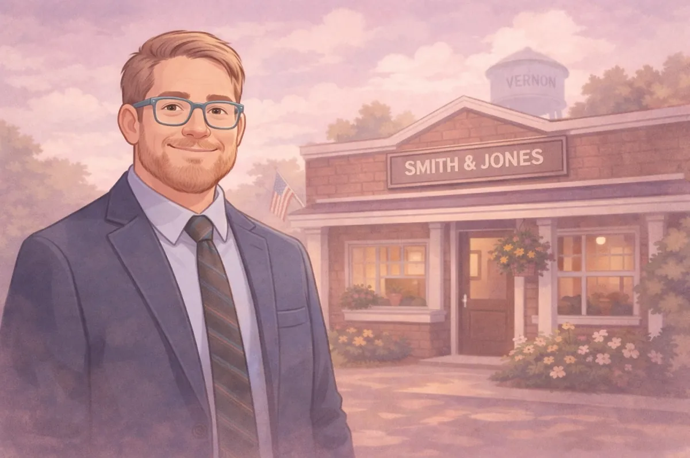
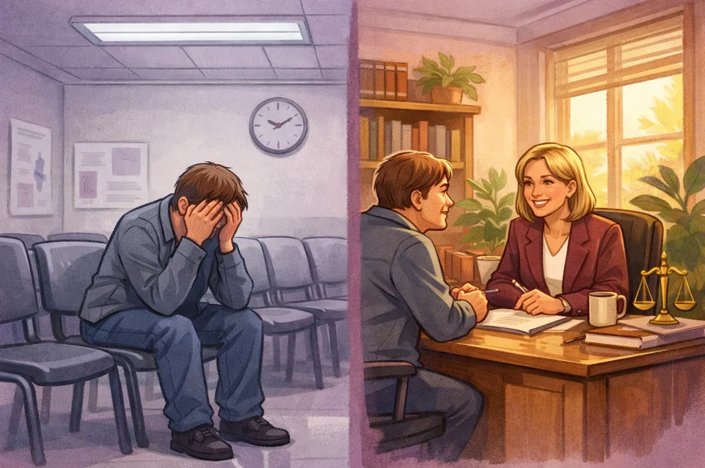
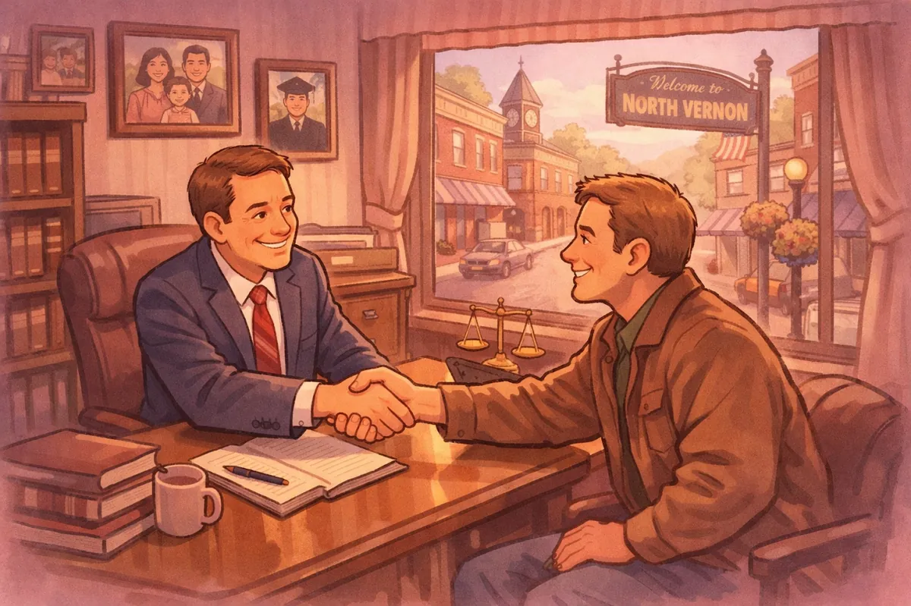

How to Choose the Best Attorney in Vernon, Indiana: Big Firm vs. Small Town Lawyer

You're sitting at your kitchen table in Vernon, Indiana, staring at your phone. You need a lawyer, but you're not sure where to start. Do you call one of those big law firms you've seen billboards for on I-65? Or do you look for someone local?
It's a real question, and honestly, there's no one-size-fits-all answer. But if you've ever felt like just another number in a system that doesn't really see you, this comparison might help you figure out what's right for your situation.
The Big Firm Experience: When You're Case #2847
Large law firms have their place. They've got resources, name recognition, and sometimes specialized teams for complex corporate matters. But here's what a lot of people in Jennings County discover when they hire a big-city firm:
You might not actually meet the attorney whose name is on the billboard. Instead, you'll work with junior associates, paralegals, or case managers. Your main contact becomes someone who's juggling dozens of other files just like yours.
Communication gets filtered through layers. You call with a question. You leave a message. Someone calls you back, maybe. You email and wait days for a response. When you finally talk to someone, they're reading your file for the first time while you're on the phone.
The billing structure can feel like a mystery. Six-minute increments. Administrative fees. Charges for emails and brief phone calls. The bill arrives, and you're not entirely sure what you paid for.
Your case follows a template. Big firms handle hundreds of similar cases. They've got a system, which can be efficient, but it also means your specific circumstances, your family situation, your worries about what happens next? Those details sometimes get lost in the process.

The Small-Town Lawyer Difference
Now let's talk about what it's like to work with a local attorney in North Vernon, someone like the lawyers who've built their practices right here in Jennings County.
You're talking to the actual lawyer. When you call Chris Doran Law LLC, you're not going through three receptionists to get to a paralegal who'll maybe pass a message along. You're talking to Chris. The person who answers your questions is the same person who'll stand next to you in court.
They actually listen. Small-town lawyers have the time and the inclination to hear your whole story. Not just the legal facts, but the context. What you're worried about. What outcome you're hoping for. What keeps you up at night. Then they give you options based on what you've told them, not based on a standardized playbook.
Transparent billing. You'll know upfront what things cost. No surprise charges for forwarding an email or a two-minute phone call. Many small-town lawyers work on flat fees for common services, so you know exactly what you're paying before you commit.

The "Many Hats" Advantage
Here's something else that sets small-town attorneys apart: they wear many hats. And in Jennings County, that's actually a huge advantage.
Think about it. Life doesn't fit into neat legal categories. You might start out needing help with a speeding ticket, and then realize you've also got questions about your grandfather's will. Or you're going through a divorce and suddenly facing criminal charges because of a heated argument that got out of hand.
At a big firm, you'd need to hire three different attorneys. At Chris Doran Law LLC, you're working with someone who handles criminal defense (OWI charges, drug offenses, traffic violations, theft, domestic battery), family law (divorce, custody disputes, protective orders), and estate planning (wills, trusts, probate).
That means the attorney who helped you set up your will also knows how to defend you if you're facing charges. The lawyer who's handling your divorce understands the criminal implications if your ex files a protective order. Everything connects, and having one attorney who sees the full picture makes a real difference.
Local Knowledge Actually Matters
When you hire a lawyer who practices in Columbus or Seymour or North Vernon, you're getting someone who knows the local courts, the local prosecutors, and how things actually work in Jennings County.
They know which judges are strict about certain issues and which ones are more flexible. They know the court clerks by name. They understand the local culture and how juries in this area think.
If you hire a big-firm lawyer from Indianapolis, they're driving down I-65 for your court date, billing you for travel time, and they've never set foot in the Jennings County Courthouse before. They don't know anyone. They're starting from scratch.
A Jennings County attorney? They're already there. They're not charging you travel fees to drive from North Vernon or Commiskey or Hayden or Scipio. They're part of the legal community in Jennings County, which means they can often get things done more efficiently because they've got established relationships.
When Does a Big Firm Make Sense?
Look, I'm not saying big firms are never the right choice. If you're a corporation facing a multi-million-dollar lawsuit, or you need a team of specialists for complex litigation, a large firm might be what you need.
But for most people in North Vernon dealing with real-life legal problems? You don't need an army of lawyers. You need someone who listens, who knows the local courts, who'll return your calls, and who treats you like a person instead of a case number.
How to Know Which Is Right for You
Here are some questions to ask yourself: Do you want to actually meet and talk to the attorney handling your case? If yes, go local. Is your case a common legal matter (divorce, OWI, estate planning, custody)? Local attorneys handle these every day. Do you value being able to walk into an office in Vernon instead of driving to Indianapolis or Louisville? Do you want straightforward answers in plain English? Is cost a consideration? Local attorneys typically charge less and bill more transparently than big firms.
What to Look for in a Local Attorney
Once you've decided to hire locally, here's what to look for: experience across multiple practice areas, availability, straight talk instead of legal jargon, genuine community connection, and someone who gives you options instead of orders.
The Bottom Line
Choosing between a big firm and a small-town lawyer isn't about which one is "better" in some abstract sense. It's about which one is better for you and your situation.
If you're in North Vernon, Commiskey, Vernon, Hayden, or anywhere else in Jennings County, and you're facing a criminal charge, going through a divorce, dealing with a custody dispute, or need to set up an estate plan, you deserve an attorney who treats you like a person.
You deserve someone who'll listen to your story, explain your options, and work with you to solve your legal problems. Not someone who's reading your file for the first time five minutes before your court hearing.
That's what small-town lawyers do. That's what Chris Doran Law LLC does. We wear many hats because that's what our neighbors need. We answer our phones because we know legal problems don't wait for business hours. We practice in Jennings County because this is our home too.
If you're trying to figure out your next steps, reach out. Let's talk about what's going on and what your options are. No pressure, no sales pitch: just straight answers from someone who's been handling these kinds of cases for years.
Because at the end of the day, that's what you really need: someone who listens, someone who knows the local courts, and someone who's on your side.